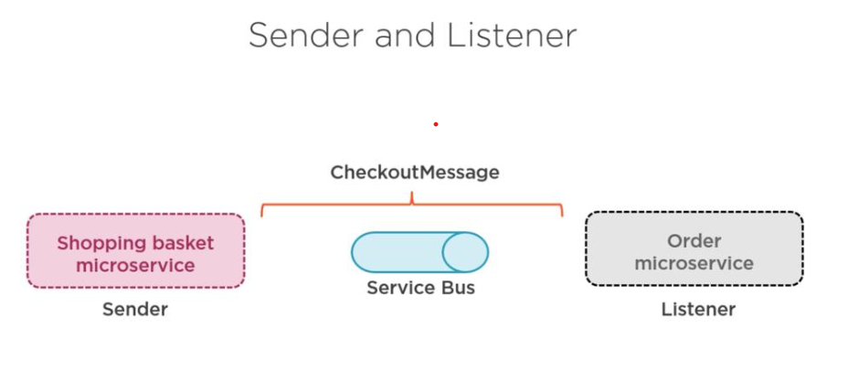
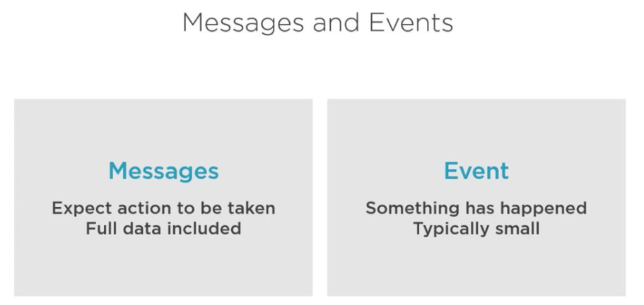

Asynchronous Communication between Microservices
Adding Asynchronous communication
Why Asynchrous communication, befor that will see disadvantages of syncrhrous communication.
Disadvantages of Synchronous
- Tight coupling
- Bottleneck in system
- One to many
- Changes are hard
- Error difficult to catch


Asynchrous communication will solve a lot of above issue


dotnet new classlib -n EvenTicket.Infrastructure.Messages -o src/BuildingBlocks/Infrastructure/EvenTicket.Infrastructure.Messages
dotnet new classlib -n EvenTicket.Infrastructure.MessagingBus -o src/BuildingBlocks/Infrastructure/EvenTicket.Infrastructure.MessagingBus
dotnet sln add src/BuildingBlocks/Infrastructure/EvenTicket.Infrastructure.Messages/EvenTicket.Infrastructure.Messages.csproj
dotnet sln add src/BuildingBlocks/Infrastructure/EvenTicket.Infrastructure.MessagingBus/EvenTicket.Infrastructure.MessagingBus.csproj
dotnet sln list
Ordering service
dotnet new webapi -n EvenTicket.Services.Ordering --use-controllers -o src/EvenTicket.Services.Ordering
dotnet sln add src/EvenTicket.Services.Ordering/EvenTicket.Services.Ordering.csproj
dotnet sln list

Event and messages

What is an Event?
An event is a fact or thing that has happened in a system.
It's a record of something that occurred in the past.
Example:
- "OrderPlaced"
- "UserRegistered"
- "PaymentFailed"
These are immutable, meaning once they happen, they don’t change.
What is a Message?
A message is a piece of data sent from one service to another to communicate something — and it may contain an event.
Messages are how services talk to each other — either by sending commands or publishing events.
Types of Messages:
- Event message – “An order was placed.”
- Command message – “Create an invoice.”
- Query message – “Get order status.”
Event vs Message (Side by Side)
| Aspect | Event | Message |
|---|---|---|
| What it is | A record of something that happened | A communication between services |
| Direction | Usually one-way (publish) | One-way or request-response |
| Example | "OrderPlaced" | "CreateInvoiceCommand" |
| Nature | Passive (just notifies) | Active (asks for something) |
Summary:
- An event says: “Something happened.”
- A message says: “Here’s some info for you.”
In event-driven systems, services emit events and consume events using messages.
Different options for event driven arch
- Azure service bus
- RabbitMQ and other
Setting up Azure service bus
check deployment folder